शिक्षण विभागातील विविध उपक्रम
प्रत्येक मुलासाठी
गुणवत्तापूर्ण शिक्षण.
नाशिक जिल्ह्यातील शैक्षणिक गुणवत्ता, पायाभूत सुविधा, वाचन, कौशल्यविकास आणि लोकसहभाग वाढविण्यासाठी राबविण्यात येणाऱ्या प्रमुख उपक्रमांचा डिजिटल आढावा.
2025–26
PGI आणि शैक्षणिक गुणवत्तेसाठी सातत्यपूर्ण प्रयत्न
जिल्हा शिक्षण आढावा
● LIVE
PGI गुण365/ 600
रँक12
58,000+
माजी विद्यार्थी सहभागी
01एका नजरेत
एका नजरेत
शिक्षणाचा आढावा
जिल्ह्यातील शाळा, विद्यार्थी, शिक्षक आणि समुदाय यांच्या सहभागातून शैक्षणिक गुणवत्ता उंचावण्यावर भर.
02मुख्य शैक्षणिक
मुख्य शैक्षणिक
उपक्रम
विद्यार्थीकेंद्रित शिक्षण, शिक्षक क्षमता विकास, वाचन संस्कृती आणि लोकसहभाग यांना एकत्र आणणारे उपक्रम.
01PGI
↗
PGI सुधारणा व डेटा गुणवत्ता
UDISE+ आणि PGI निर्देशकांची अचूक नोंद, तालुका स्तरावरील समन्वय आणि नियमित आढावा.
डेटा • गुणवत्ता • प्रशासन
02NIPUN
Aa
निपुण महाराष्ट्र
पायाभूत साक्षरता व संख्याज्ञानासाठी वाचन, कृतीपुस्तिका आणि वर्गातील सातत्यपूर्ण सराव.
Reading • Foundational
03READ
◫
चला पुस्तक वाचूया
100 दिवस वाचन चळवळीद्वारे विद्यार्थ्यांमध्ये नियमित वाचनाची सवय आणि वाचन क्षमता वाढविणे.
100 Days • Reading
04TEACH
◉
TEACH वर्गनिरीक्षण
World Bank च्या TEACH Tool च्या माध्यमातून अध्यापन अधिक प्रभावी करण्यासाठी नियमित निरीक्षण व अभिप्राय.
Teachers • World Bank
05STEM
∑
Math Bee व Spelling Bee
गणितीय विचार, इंग्रजी शब्दसंग्रह आणि विद्यार्थ्यांचा आत्मविश्वास वाढविणाऱ्या स्पर्धात्मक उपक्रमांची अंमलबजावणी.
Math • English • Competition
06COMMUNITY
⌂
शैक्षणिक ग्रामसभा
ग्रामपंचायत, पालक, शिक्षक, अंगणवाडी, SMC, माजी विद्यार्थी आणि ग्रामस्थांचे एकत्रित व्यासपीठ.
लोकसहभाग • शाळा • गाव
03
उपक्रमांचा
उपक्रमांचा
दिसणारा परिणाम.
निपुण स्तराधारित कृती पुस्तिका उपक्रमात 131 शाळांमधील 5,625 विद्यार्थ्यांसाठी 30 दिवसांचा कृती आराखडा राबविण्यात आला.
9.9%जानेवारी 2026 सरासरी NIPUN
77.6%मार्च 2026 नंतर सरासरी NIPUN
60.3%शाळांनी Super NIPUN गाठले
NIPUN प्रगती2026
100%75%50%25%0%
JAN9.9%
MAR77.6%
97 पैकी 131 शाळांनी NIPUN दर्जा प्राप्त केला
04विद्यार्थ्यांसाठी
विद्यार्थ्यांसाठी
नवीन अनुभव
वर्गाच्या पलीकडे जाऊन अनुभवाधारित शिक्षण, मार्गदर्शन आणि प्रेरणा देणारे उपक्रम.
01
ज्ञानयात्री
दुर्गम भागातील विद्यार्थ्यांना शहरातील विज्ञान, कला आणि ज्ञानकेंद्रांना भेटी.
02
नाशिक ते NASA
गुणवंत विद्यार्थ्यांना आंतरराष्ट्रीय विज्ञान अनुभव व अंतराळ तंत्रज्ञानाचा परिचय.
03
सुपर-100 क्लासरूम
ग्रामीण व आर्थिकदृष्ट्या दुर्बल विद्यार्थ्यांना IIT, NEET सारख्या स्पर्धांसाठी मार्गदर्शन.
04
ज्ञानज्योती अभ्यासिका
750 ग्रामपंचायतींमध्ये आधुनिक व सुसज्ज अभ्यासिकांची उभारणी करण्याचा उपक्रम.
06उपक्रमांची
उपक्रमांची
छायाचित्रे
प्रस्तुतिकरणातील प्रत्यक्ष उपक्रम, विद्यार्थी, शिक्षक आणि समुदाय सहभागाची निवडक छायाचित्रे.
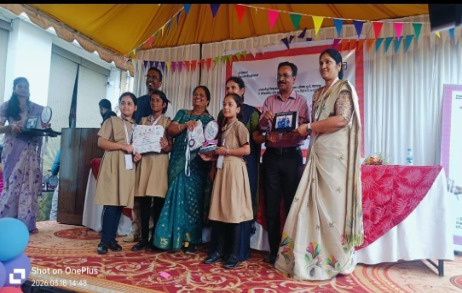
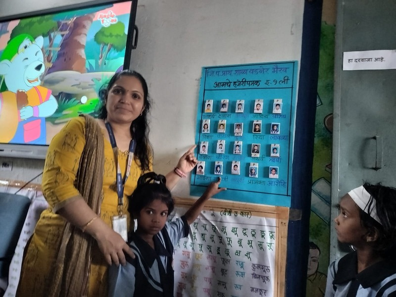
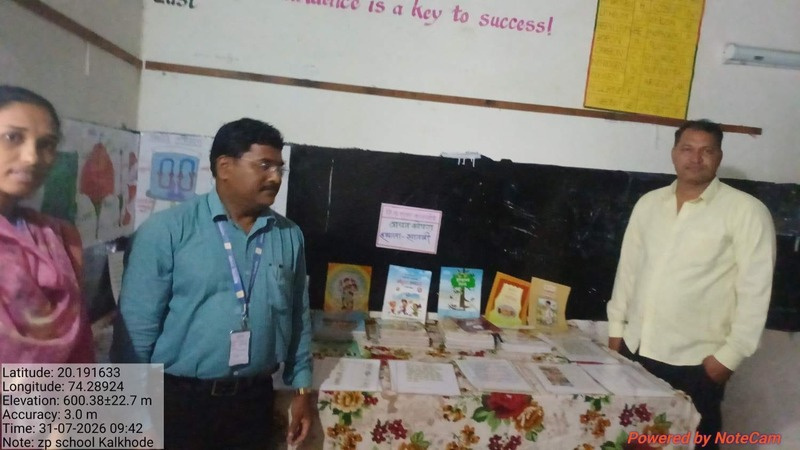
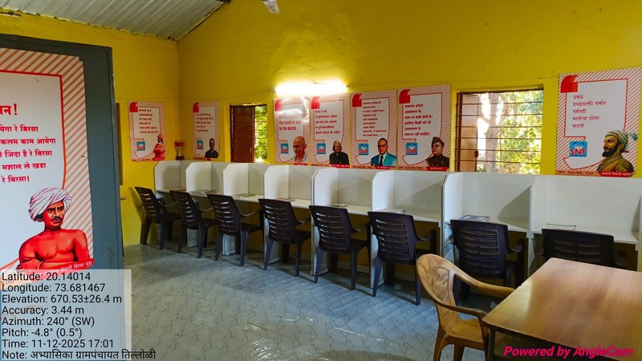
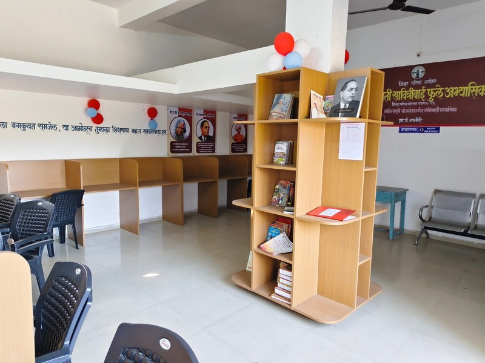
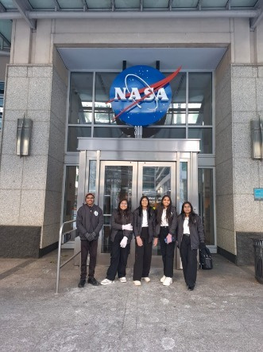
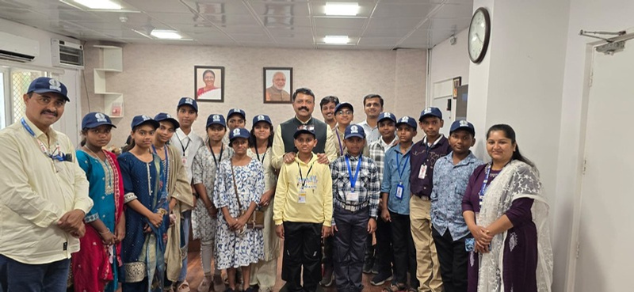
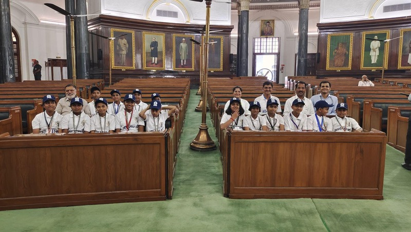
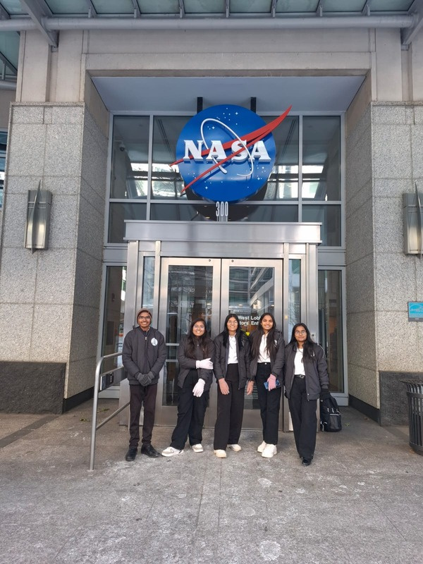
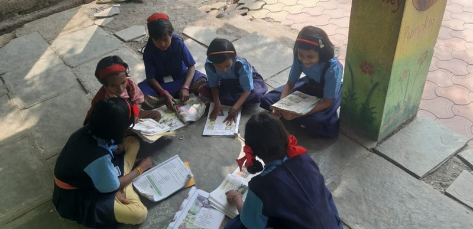
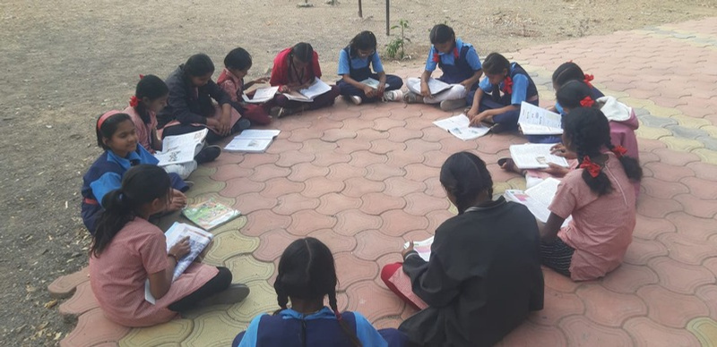
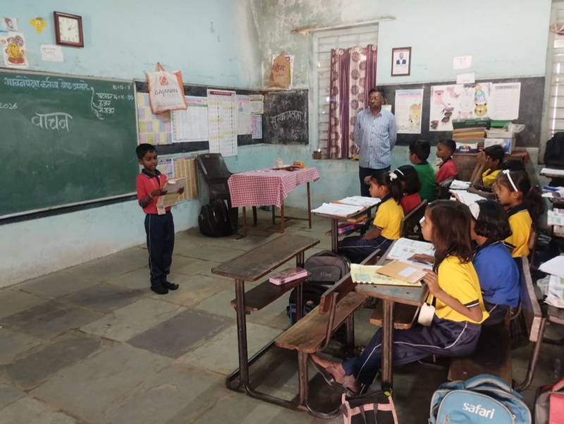
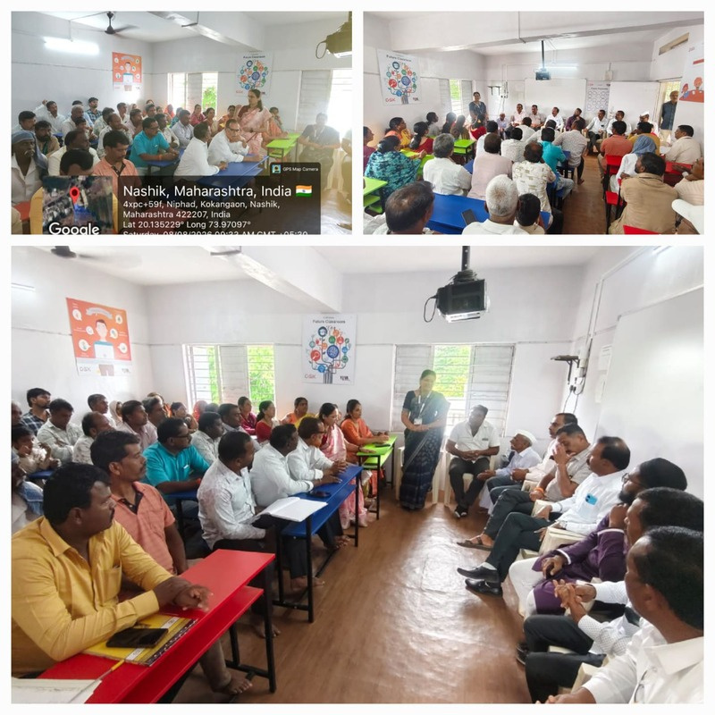
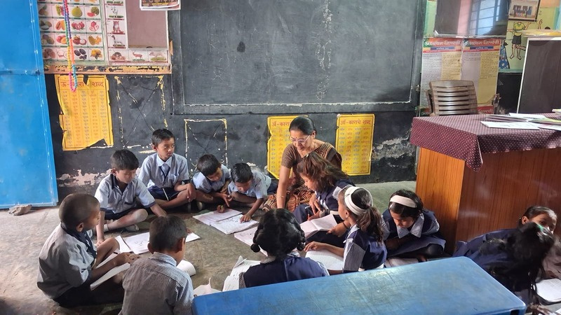
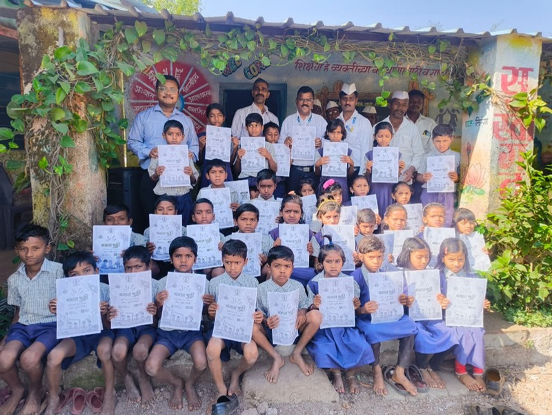
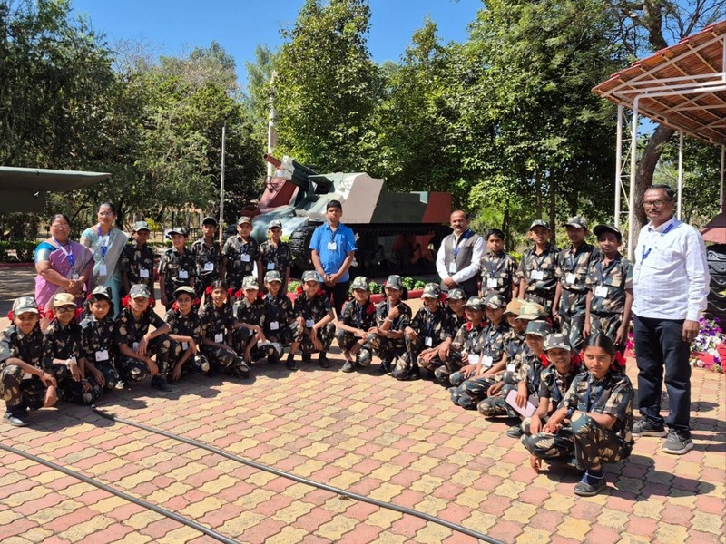
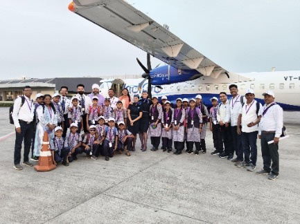
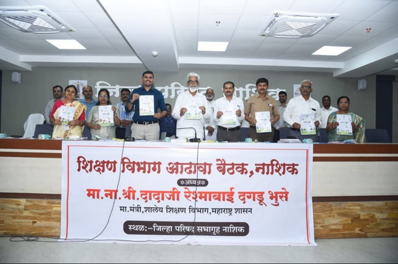


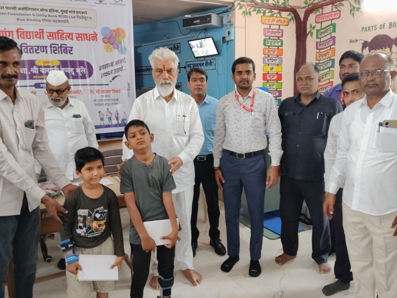
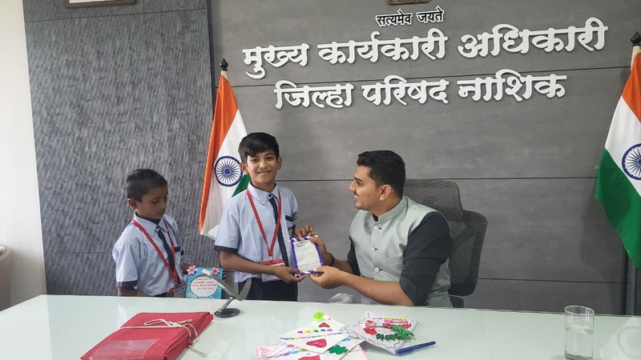
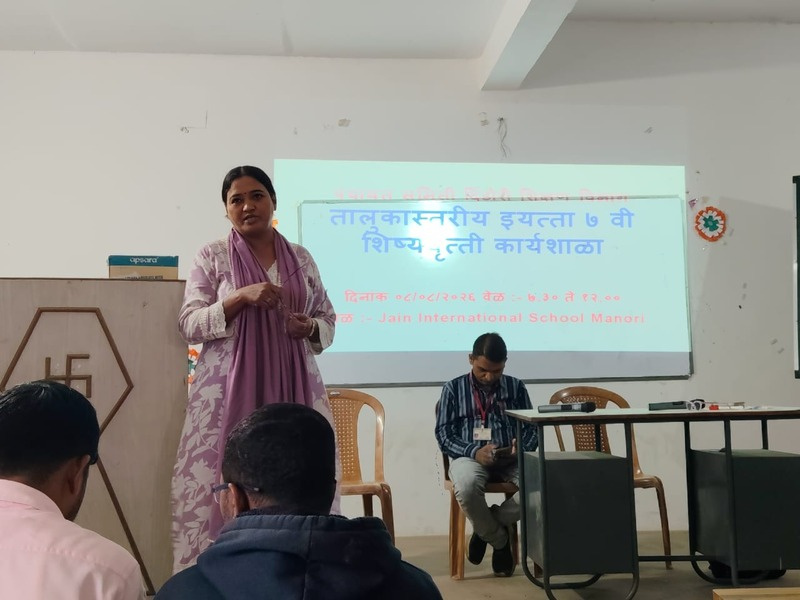
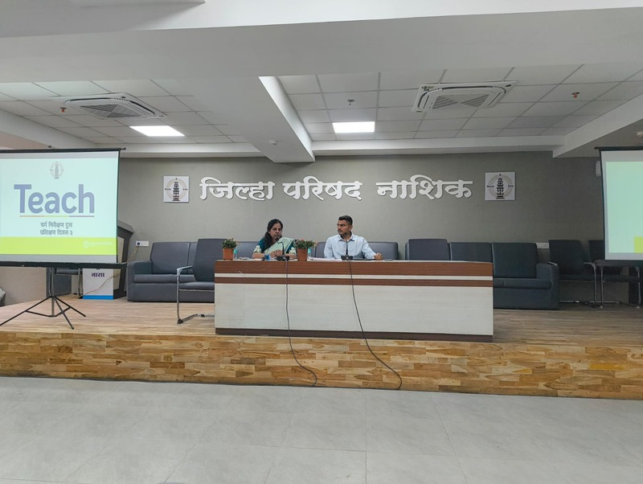
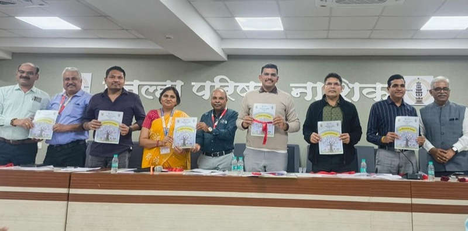
05
माझी शाळा –
माझी शाळा –
माझा अभिमान.
माजी विद्यार्थी आणि लोकसहभागातून शाळांमध्ये शैक्षणिक व भौतिक सुविधा उभारण्याचा प्रेरणादायी प्रयत्न.
₹3.41 कोटीएकूण एकत्रित मदत
58,000+माजी विद्यार्थी
100%लोकसहभाग आधारित